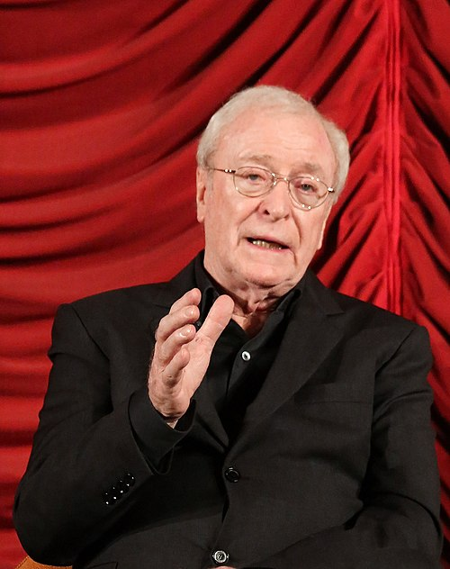

Personajes
Joseph Cooper

Joseph Cooper es un ex piloto de pruebas y agricultor que, tras el colapso ecológico en la Tierra, se ve obligado a unirse a
una misión espacial para buscar un nuevo hogar para la humanidad. Su carácter se define por la valentía, la capacidad de liderazgo y,
sobre todo, por el profundo amor hacia sus hijos.
Durante toda la historia, Cooper lucha entre el deber de salvar a la especie humana y el deseo personal de regresar con su familia,
lo que lo convierte en el eje emocional de la película.
Interpretado por Matthew McConaughey
Amelia Brand

Amelia Brand es una astrofísica y astronauta, hija del profesor Brand.
Se une a la expedición junto a Cooper y los demás miembros de la tripulación. Amelia es una mujer racional y, al mismo tiempo,
profundamente sensible, que defiende la idea de que el amor es una fuerza trascendental capaz de guiar incluso en el vasto universo.
Su vínculo emocional con uno de los astronautas desaparecidos influye en sus decisiones, lo que la humaniza y la vuelve una figura compleja
dentro de la misión.
Interpretada por Anne Hathaway
Murph Cooper
Murph Cooper es la hija de Joseph Cooper, una niña curiosa, apasionada por la ciencia y con un fuerte vínculo con su padre.
Al crecer, se convierte en una científica brillante que trabaja junto a la NASA para resolver la ecuación que permitiría salvar a
la humanidad. La relación con su padre, marcada por la distancia y el dolor de la separación, es uno de los motores más poderosos
de la trama. Murph demuestra perseverancia, inteligencia y un carácter fuerte que la llevan a ser una pieza clave en la misión.
Interpretada por Mackenzie Foy (niña), Jessica Chastain (adulta) y Ellen Burstyn (anciana)
Tom Cooper
Tom Cooper es el hijo de Joseph Cooper y hermano mayor de Murph. A diferencia de su hermana, Tom no sigue un camino científico,
sino que permanece en la Tierra para continuar con la vida agrícola en un planeta cada vez más hostil.
Es un personaje que representa la resiliencia, la fidelidad a la familia y la dureza de la vida cotidiana frente al colapso ambiental.
Con el tiempo, Tom se convierte en un hombre práctico y decidido, pero también obstinado y resistente a aceptar la gravedad de
la situación. Su visión más conservadora lo distancia de su hermana Murph, que apuesta por la ciencia como salida para la humanidad.
A través de Tom, la película muestra la lucha de quienes se quedaron en la Tierra, enfrentando tormentas de polvo, pérdidas y la
lenta decadencia de la vida humana.
Interpretado por Timothée Chalamet (joven) y Casey Affleck (adulto)
John Brand

El profesor Brand es un respetado científico y líder del proyecto Lazarus, la misión secreta de la NASA destinada a encontrar un planeta habitable.
Presentado como una figura sabia y confiable, Brand motiva a los astronautas con su conocimiento y experiencia.
Sin embargo, a lo largo de la trama se revela que ocultaba información crucial sobre la verdadera viabilidad del plan de salvación,
lo que añade una dimensión trágica y ambigua a su personaje.
Interpretado por Michael Caine
Hugh Mann

El doctor Mann es uno de los astronautas enviados en la primera expedición para explorar planetas potencialmente habitables.
Al principio es considerado un héroe por sus colegas, pero pronto se revela su lado más oscuro: la desesperación y el miedo
lo llevan a engañar a los demás para sobrevivir. Mann simboliza la fragilidad humana ante el aislamiento y el instinto de autoconservación llevado al extremo.
Interpretado por Matt Damon
Actores
Matthew McConaughey


Es un actor estadounidense nacido en 1969, ganador del Óscar por su papel en Dallas Buyers Club (2013).
Conocido por su versatilidad, ha trabajado tanto en comedias románticas como en dramas intensos y thrillers.
Su carrera dio un giro con el llamado “McConaissance”, cuando asumió papeles más serios y complejos, como en True Detective.
En octubre de 2020 publicó su libro autobiográfico titulado Greenlights.
El libro incluye historias y conocimientos de la vida de McConaughey en orden cronológico.
Se ha descrito como una memoria, debutando número 1 en The New York Times Best Seller list.
En Interstellar interpretó a Joseph Cooper
Anne Hathaway

Actriz estadounidense nacida en 1982, ganadora del Óscar por Les Misérables (2012).
Ha trabajado en una amplia variedad de géneros, desde comedias románticas hasta ciencia ficción.
Conocida también por El diablo viste a la moda y The Dark Knight Rises.
La revista People la nombró como una de las grandes estrellas descubiertas en 2001 y apareció por primera vez en la lista
de las 50 personas más bellas del mundo de dicha revista en 2006.
En Interstellar interpretó a Amelia Brand
Jessica Chastain
Actriz estadounidense nacida en 1977, reconocida por su intensidad dramática y nominada en múltiples ocasiones al Óscar.
Ha trabajado en películas como Zero Dark Thirty y The Help. Se caracteriza por interpretar personajes fuertes y determinados.
Chastain ganó un Premio Óscar en la categoría de Mejor Actriz por The Eyes of Tammy Faye (2021), y ha sido nominada dos veces más:
Mejor Actriz de Reparto por The Help y Mejor Actriz por Zero Dark Thirty.
Ganó el Globo de Oro a la mejor actriz - Drama por Zero Dark Thirty, y ha sido nominada seis veces más por sus trabajos en papeles
protagonistas como en: Miss Sloane, Molly's Game y The Eyes of Tammy Faye; y en papeles secundarios como en:
The Help y A Most Violent Year; y por su papel en la pequeña pantalla en la categoría de mejor actriz de miniserie o telefilme
por Escenas de un Matrimonio.
En Interstellar interpretó a Murph adulta
Mackenzie Foy
Actriz y modelo estadounidense nacida en 2000. Saltó a la fama por interpretar a Renesmee Cullen en The Twilight Saga: Breaking Dawn.
Su talento la llevó a trabajar en producciones de gran escala desde muy joven.
En 2020 interpretó a la joven Jo Green en otra película de Disney, Black Beauty.
En Interstellar dio vida a Murph en su niñez
Ellen Burstyn
Actriz estadounidense nacida en 1932, con una extensa carrera en cine, televisión y teatro.
Ganadora del Óscar por Alice Doesn't Live Here Anymore (1974), también es recordada por The Exorcist y Requiem for a Dream.
Burstyn es uno de los pocos artistas que ha ganado la denominada "Triple Corona de la Actuación"
(aquellos intérpretes que han obtenido los premios Óscar, Emmy y Tony). En 2013, fue incluida en el American Theater Hall of Fame.
En Interstellar interpretó a Murph anciana
Casey Affleck

Actor y director estadounidense nacido en 1975, hermano menor de Ben Affleck. Ganó el Óscar por Manchester by the Sea (2016).
Conocido por su estilo interpretativo introspectivo y naturalista.
Durante las décadas de 1990 y 2000 interpretó papeles secundarios en grandes producciones como Good Will Hunting (1997) y
Ocean's Eleven (2001), y en exitosas películas independientes como Persiguiendo a Amy (1997).
En 2007, el año que catapultó su carrera como actor, Affleck fue reconocido y elogiado por la crítica por su trabajo en
Gone Baby Gone y El asesinato de Jesse James por el cobarde Robert Ford, por la última fue nominado a los Premios Óscar
como mejor actor de reparto. Años más tarde ganaría el Óscar a mejor actor por su trabajo en Manchester by the Sea en 2016.
En Interstellar interpretó a Tom Cooper adulto
Timothée Chalamet
Actor franco-estadounidense nacido en 1995. Se convirtió en uno de los intérpretes jóvenes más reconocidos tras Call Me by Your Name (2017),
por la cual recibió una nominación al Óscar. Ha trabajado en películas como Dune y Lady Bird.
En el escenario, Chalamet protagonizó la obra autobiográfica de John Patrick Shanley Prodigal Son en 2016,
por la que ganó un premio Lucille Lortel y obtuvo una nominación a un premio Drama League.
Fuera de la pantalla, ha sido etiquetado como un símbolo sexual y un ícono de la moda.
En Interstellar interpretó a Tom Cooper joven
Matt Damon
Actor estadounidense nacido en 1970, ganador del Óscar como guionista de Good Will Hunting y nominado varias veces como actor.
Protagonista de grandes éxitos como The Bourne Identity y The Martian.
Otros de sus reconocimientos incluyen seis nominaciones a los Teen Choice Awards y diez MTV Movie & TV Awards,
así como un premio al actor de cine de acción favorito en los People's Choice Awards de 2008, ceremonia en la que ha obtenido
un total de seis nominaciones.
En Interstellar interpretó al Dr. Mann
Michael Caine


Actor británico nacido en 1933, considerado una leyenda del cine con más de seis décadas de carrera.
Ha ganado dos premios Óscar y es reconocido por su voz inconfundible y su presencia en películas de Christopher Nolan como The Dark Knight.
Michael Caine es, junto a Laurence Olivier, Paul Newman, Denzel Washington y Jack Nicholson, los únicos actores que han aspirado al
Óscar en cinco décadas diferentes. Además, sus películas han recaudado cerca de $8000 millones de dólares a través de los años,
convirtiéndolo en el undécimo actor de mayor recaudación de la historia.
Fue nombrado Caballero por la reina Isabel II en 2000 por su contribución a las artes interpretativas.
En Interstellar dio vida al Profesor Brand